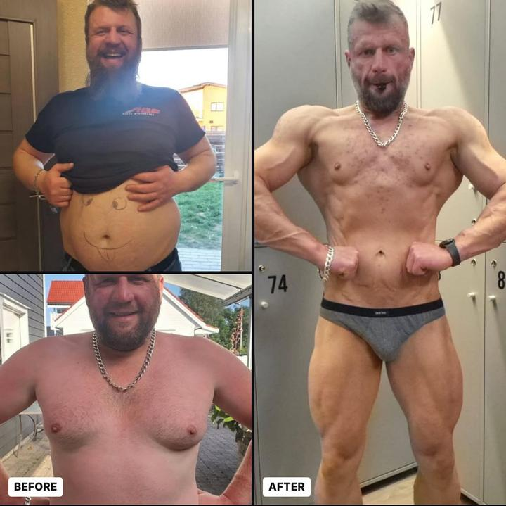
−47 kg
body weightkūno svorio
New habits, discipline and training became his everyday life.Nauji įpročiai, disciplina ir sportas tapo kasdienybe.
1:1 coaching with an IFBB Pro: food you enjoy, training that fits your week, and me, always one message away.1:1 koučingas su IFBB Pro: maistas, kurį mėgsti, treniruotės pagal tavo savaitę ir aš – visada per vieną žinutę nuo tavęs.
7 quick questions, about a minute, then you pick a time. I take only a few new clients each month.7 trumpi klausimai, apie minutę, tada pasirenki laiką. Kas mėnesį priimu tik kelis naujus klientus.
Real clients, their own photos and words. I can't promise anyone a number.Tikri klientai, jų nuotraukos ir jų žodžiai. Niekam negaliu pažadėti konkretaus skaičiaus.
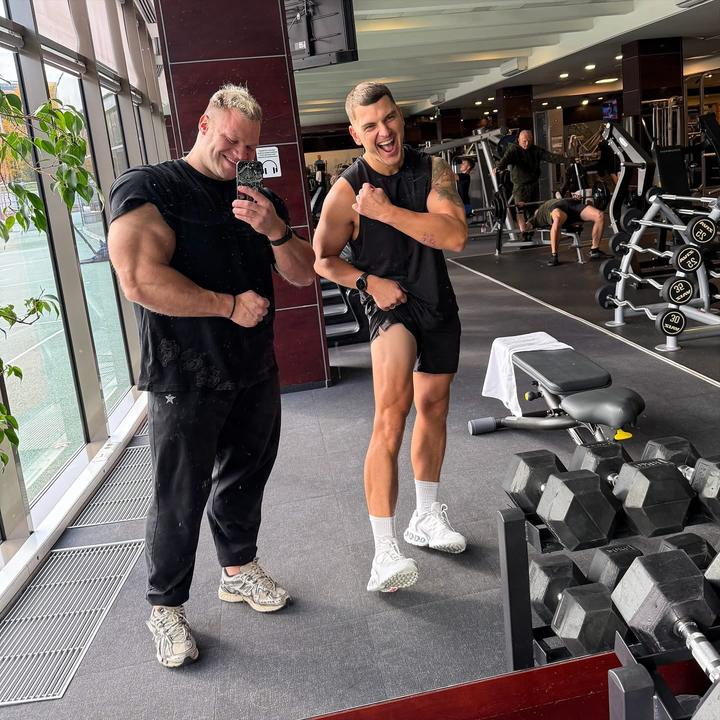
Rolandas Mackevičius
A well-known face on Lithuanian TV. We've worked together for 2 years.Gerai žinomas Lietuvos televizijos veidas. Dirbame kartu 2 metus.
@rolandas
−47 kg
body weightkūno svorio
New habits, discipline and training became his everyday life.Nauji įpročiai, disciplina ir sportas tapo kasdienybe.
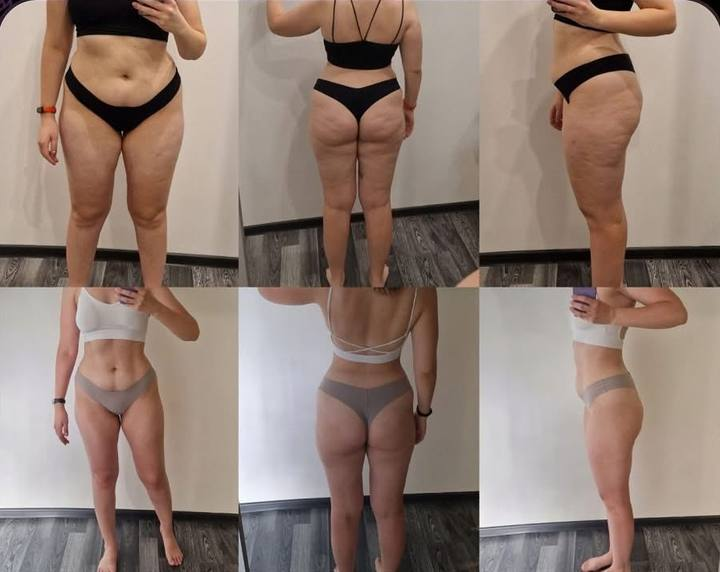
−16 kg
76 → 60 kg in a year76 → 60 kg per metus
“A year ago, before my first challenge, I weighed 76. Now 60. I feel better in every way, I trust myself more and I finally love myself.”„Prieš metus (prieš pirmą iššūkį) svėriau 76... dabar 60 kg 😊 … jaučiuosi visapusiškai geriau, labiau savimi pasitikiu ir pagaliau myliu save!“
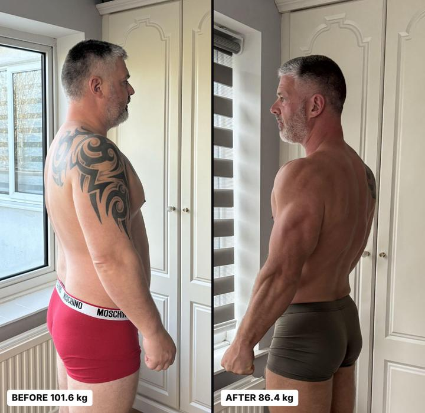
−15.2 kg−15,2 kg
101.6 → 86.4 kg101,6 → 86,4 kg
Same room, same wardrobe. A system built around his lifestyle, not just a program.Tas pats kambarys, ta pati spinta. Sistema, pritaikyta jo gyvenimo būdui, o ne tik programa.
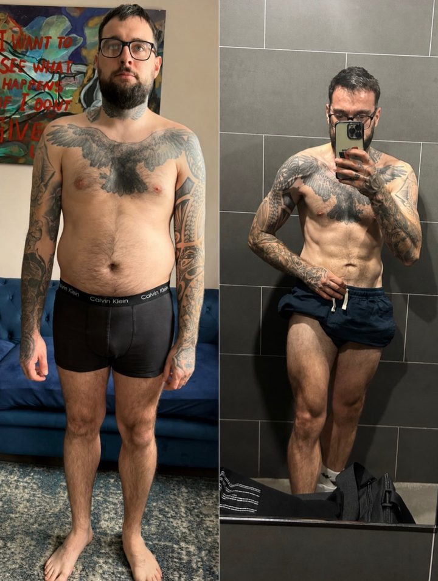
4 months4 mėnesiai
before and afterprieš ir po
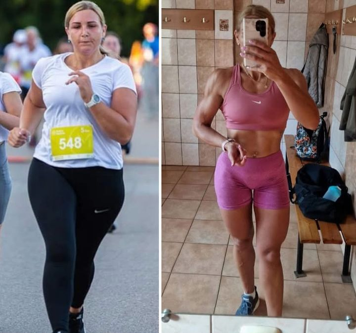
More than 4 years apartDaugiau nei 4 metų skirtumas
her 4th or 5th Insane Challenge4-as ar 5-as Insane Challenge
“I don't even know if this is my 4th or 5th challenge. I've been through all of it […] but these training and nutrition programs help me get back on track. The results motivate me most, and I keep wanting to do even better.”„Jau net nežinau tai 4 ar 5 iššūkis... Visko būta […] bet šios sporto ir mitybos programos padeda grįžti į vėžias. Labiausiai motyvuoja rezultatai ir vis norisi dar geriau 🤩“
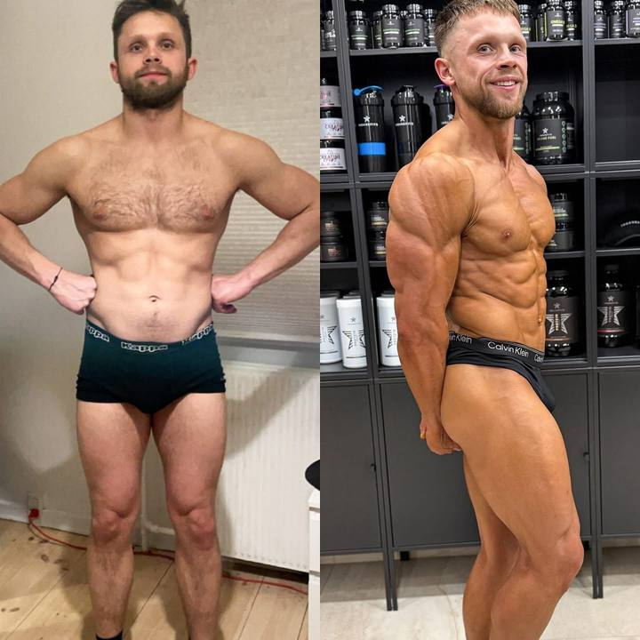
Less fat, more muscleMažiau riebalų, daugiau raumenų
before and afterprieš ir po
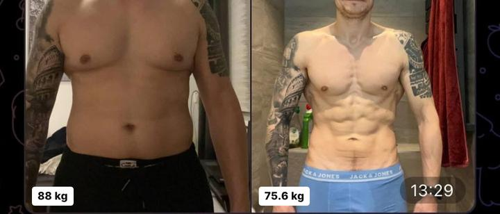
−12.4 kg−12,4 kg
88 → 75.6 kg, waist 92 → 79 cm88 → 75,6 kg, liemuo 92 → 79 cm
“From 88 kg to 75.6 yesterday morning. The measurements went down exactly where they should. I'm glad I joined.”„Iš 88 kg iki 75,6 vakar ryte ;) Apimtys irgi pamažėjo per ten, kur ir reikia :D Liemuo iš 92 į 79 cm ;)“
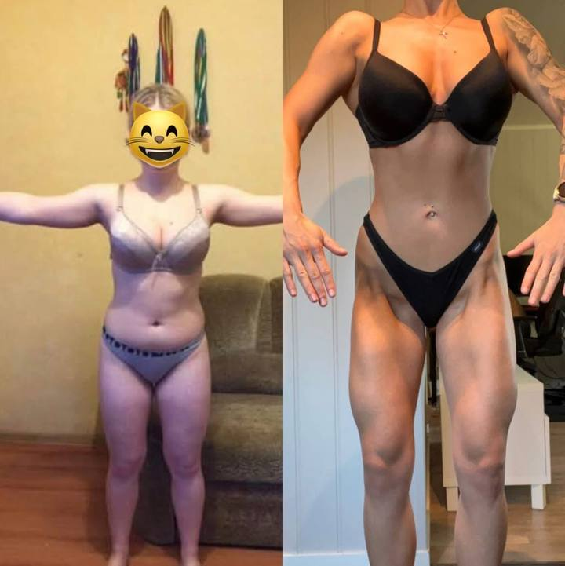
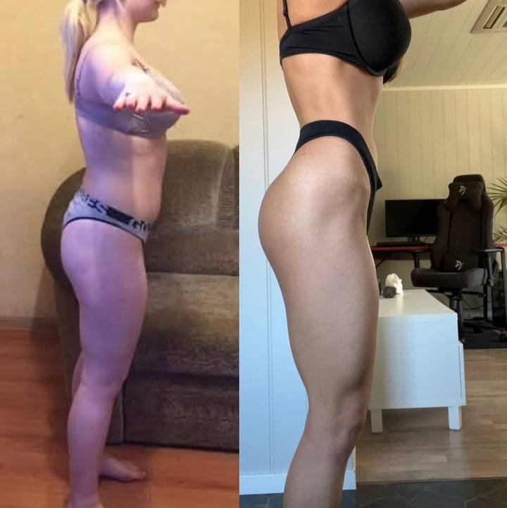
Body recompositionKūno rekompozicija
front and sideiš priekio ir šono
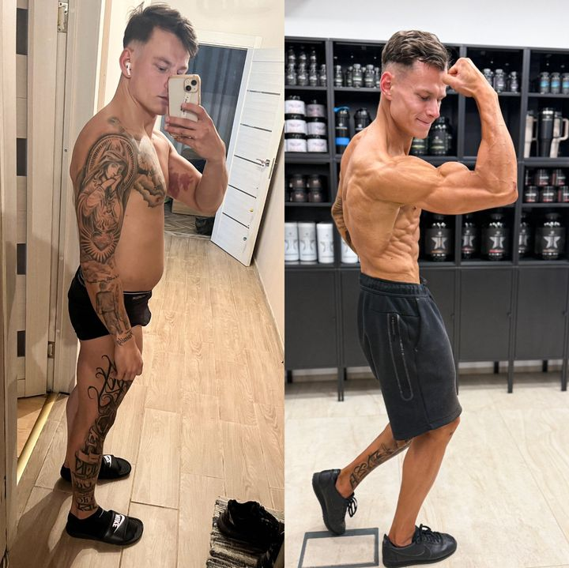
Lean, with abs showingLiesas, matosi presas
before and afterprieš ir po
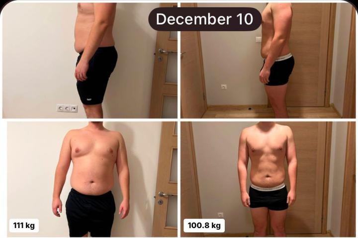
−10.2 kg−10,2 kg
111 → 100.8 kg, waist 112 → 93 cm111 → 100,8 kg, liemuo 112 → 93 cm
“Started at 111 kg, today 100.8. Waist started at 112 cm, today 93 cm. We keep moving.”„Pradėta su 111 kg, šiandien 100.8, liemuo pradėta su 112 cm, šiandien 93 cm :) judėsim toliau“
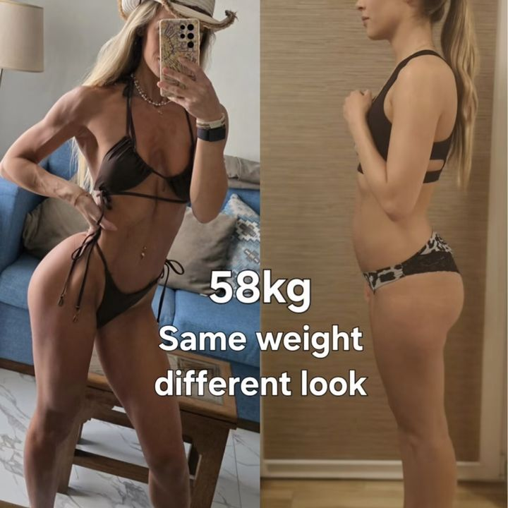
58 kg → 58 kg
same weight, different looktas pats svoris, kitoks vaizdas
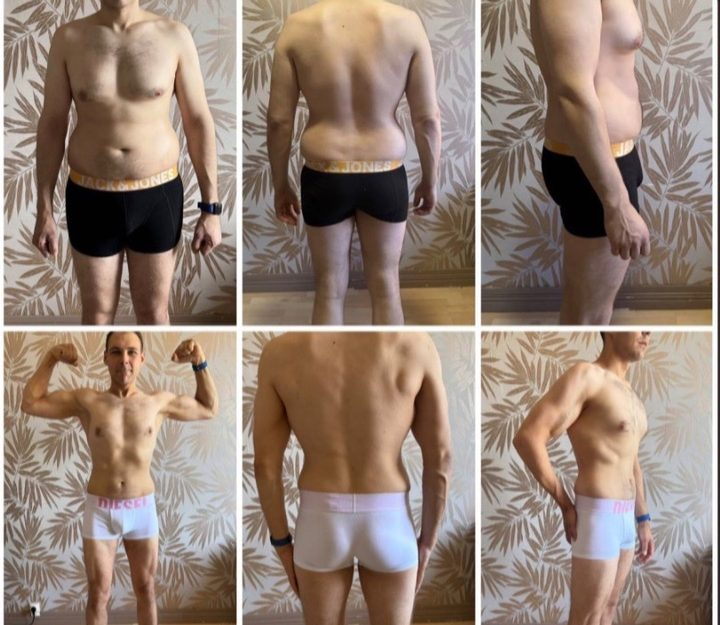
3 months3 mėnesiai
top row before, bottom row afterviršuje prieš, apačioje po

−7 kg
in 3 monthsper 3 mėnesius
“I'd never trained before. I got to know training, healthy eating and my own body. Happy with my 3-month result!”„Prieš tai niekada nesportavau, susipažinau su sportu, sveika mityba ir savo kūnu. Džiaugiuosi 3 mėn. rezultatu!“
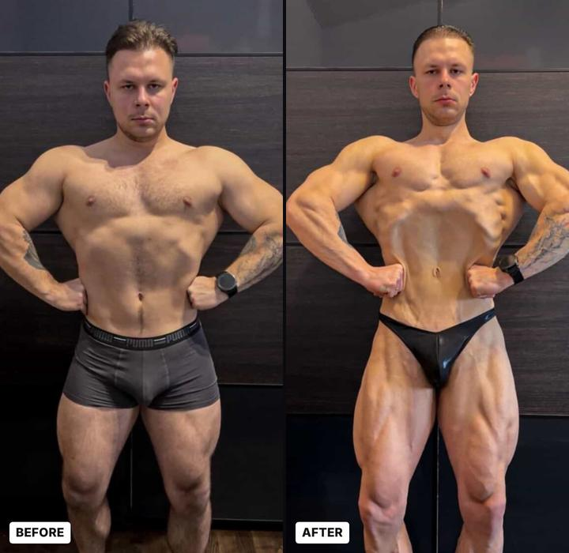
−12 kg
in 13 weeks, muscle keptper 13 savaičių, raumenys išsaugoti
It wasn't more discipline. The strategy was right from the beginning.Reikėjo ne daugiau disciplinos. Strategija buvo teisinga nuo pat pradžių.
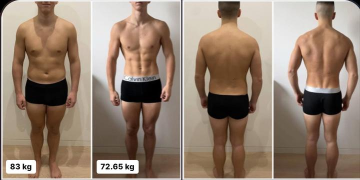
−10.35 kg−10,35 kg
83 → 72.65 kg in 6 months, belly 88 → 75 cm83 → 72,65 kg per 6 mėn., pilvas 88 → 75 cm
“6 months. Weight from 83 to 72.65. Belly from 88 to 75. We keep going.”„6 mėn. Svoris nuo 83 iki 72.65. Pilvas nuo 88 iki 75. Judam toliau“
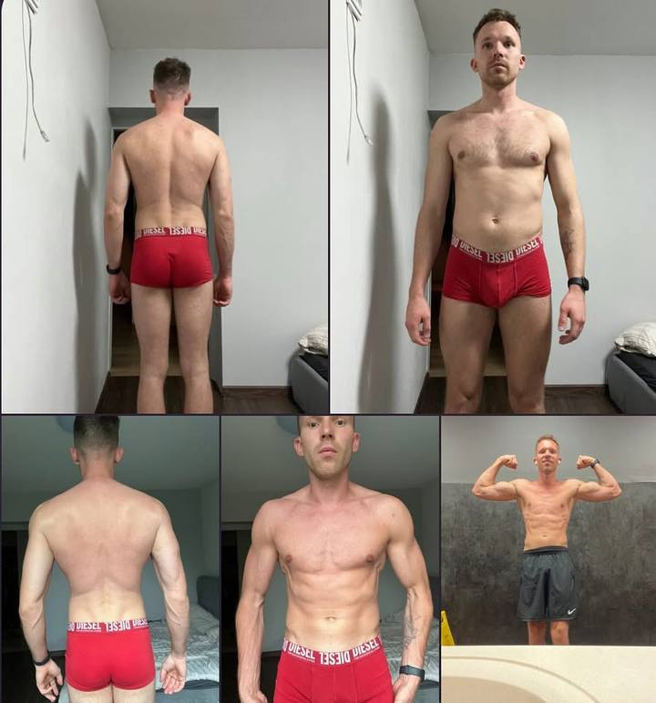
Fat off, muscle nextRiebalai nuimti, dabar – raumenys
“Count me in too. The goal was to lose fat, now I'm building lean muscle :)”„Prisidedu ir aš, buvo tikslas nusimesti riebalą, dabar lieso raumens auginimo procese :)“
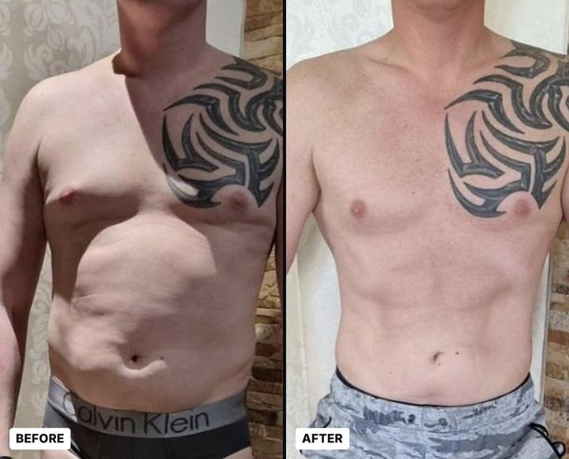
−8.2 kg−8,2 kg
in 12 weeks, waist −11 cmper 12 savaičių, liemuo −11 cm
His fasting insulin went from 18 to 7. His own lab results, before and after.Jo insulinas nevalgius nukrito nuo 18 iki 7. Jo paties tyrimai prieš ir po.
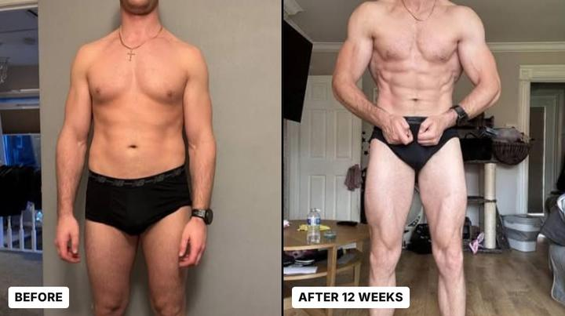
−9 kg
in 12 weeksper 12 savaičių
“Minus 9 kg and plus 1 kg of lean muscle. I'm happier with it than I expected. On we go.”„Mano pasiektas rezultatas per 12 savaičių −9 kg ir +1 kg lieso raumens, esu patenkintas daugiau nei tikėjausi, važiuojam toliau“
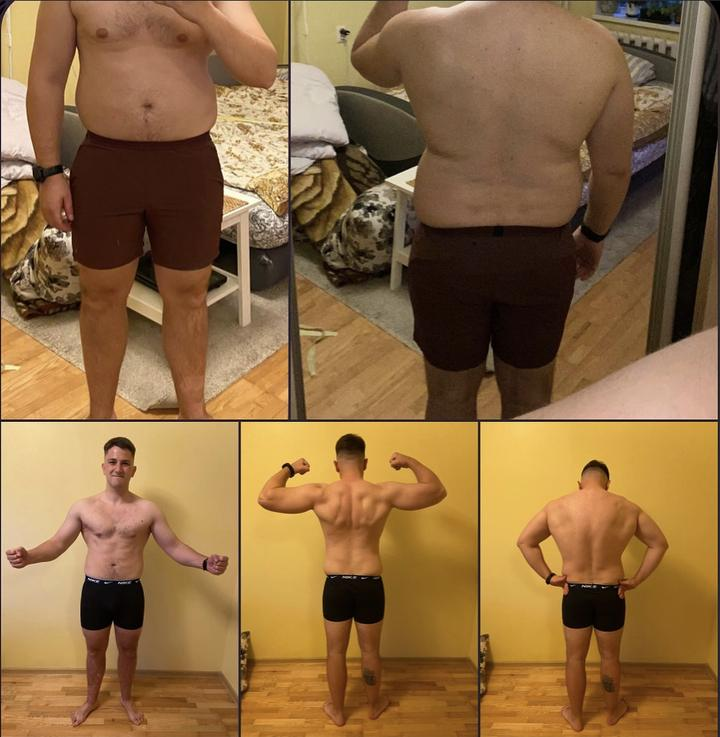
−9.5 kg−9,5 kg
106 → 96.5 kg106 → 96,5 kg
“April 14: 106 kg. Now 96.5 in the evening. I bet it'll be 96 in the morning.”„Balandžio 14 106kg vs dabar 96,5 (vakare), ryte spėju bus 96“
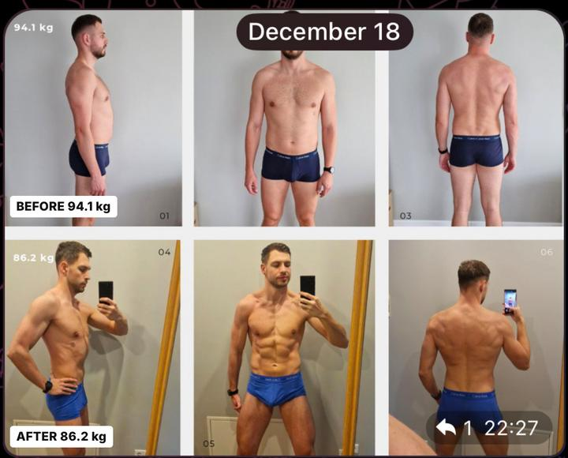
−7.9 kg−7,9 kg
94.1 → 86.2 kg94,1 → 86,2 kg
He sent six photos, two numbers and not one word.Atsiuntė šešias nuotraukas, du skaičius ir nė vieno žodžio.
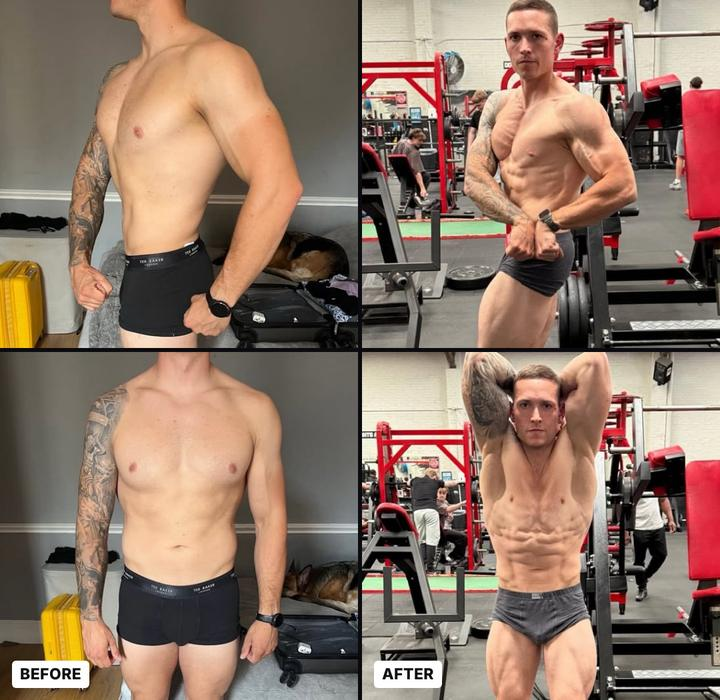
First medalPirmas medalis
first competitionpirmos varžybos
He worked. He travelled. He had responsibilities. We built habits he could follow even when life got busy.Jis dirbo, keliavo ir turėjo įsipareigojimų. Sukūrėm įpročius, kurių jis galėjo laikytis ir tada, kai gyvenime buvo daug darbų.
3,000+3 000+clients in 11 years. This is a small part. I post new results on Instagram: klientų per 11 metų. Čia tik maža dalis. Naujus rezultatus keliu į Instagram: @insane_lukas
Results from my 1:1 clients and Insane Challenge members. Shared with their permission.Mano individualių klientų ir Insane Challenge dalyvių rezultatai. Skelbiama su jų leidimu.
Pick yours. I'll show you how we deal with it.Išsirink savo. Parodysiu, kaip tai sprendžiam.
You don't need more free time. You need a plan that fits the week you already have. We set the sessions around your calendar, and you get a shorter version for the days that blow up.Tau nereikia daugiau laisvo laiko. Reikia plano, kuris telpa į tavo dabartinę savaitę. Treniruotes dėliojam pagal tavo kalendorių, o dienoms, kai viskas griūva, turi trumpesnę versiją.
Your plan has a travel version: a hotel gym session, a room workout and what to order at a restaurant. A trip stops being a reason to start over.Tavo planas turi kelionių versiją: treniruotė viešbučio salėje ar kambaryje ir ką rinktis restorane. Kelionė nebėra priežastis viską pradėti iš naujo.
Training and meal prep go around family time, not instead of it. And your kids get to see what discipline looks like.Treniruotes ir maisto ruošą dėliojam aplink šeimos laiką, o ne vietoj jo. O vaikai mato, kaip atrodo disciplina.
Motivation drops for everyone. That's why you check in with me every week and can text me any day. A bad week stays one bad week.Motyvacija krenta visiems. Todėl kas savaitę atsiskaitai man, o parašyti gali bet kurią dieną. Taip bloga savaitė ir lieka viena bloga savaite.
You get your nutrition in grams, built from food you like. Nothing is banned, so there's nothing to break.Mitybą gauni gramais, iš maisto, kurį mėgsti. Nieko nedraudžiama, todėl nėra ko sulaužyti.
What I say in the video:Ką sakau šiame video:
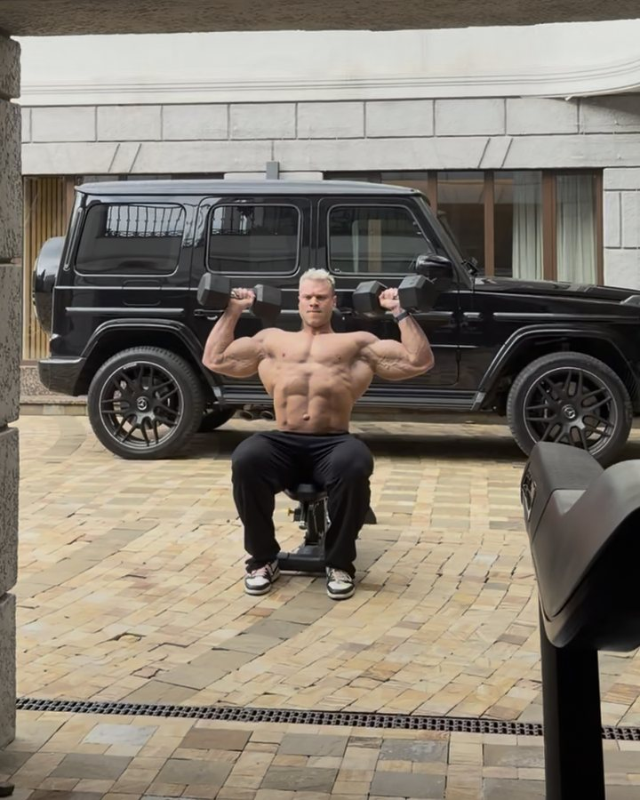
I stay. Here's what's different.Aš lieku. Štai kuo skiriasi.
A PDF plan, then silence.PDF planas – ir tyla.
Text me any time. When it helps, we get on a call.Rašai man bet kada. Kai reikia – skambinam.
A diet with an end date.Dieta su pabaigos data.
Habits that stay after we finish.Įpročiai, kurie lieka ir baigus mūsų darbą.
Chicken, rice, broccoli. Every day.Vištiena, ryžiai, brokoliai. Kasdien.
A full diet, built from food you like.Pilnavertė mityba iš maisto, kurį mėgsti.
Hunger and willpower.Alkis ir valios jėga.
Energy: you wake up wanting to do things.Energija: keliesi ir nori veikti.
One trip and it all falls apart.Viena kelionė – ir viskas subyra.
A system that travels with you.Sistema, kuri keliauja kartu su tavimi.
Nothing banned, no starving. These are my everyday plates, weighed in grams.Nieko nedraudžiama, jokio badavimo. Tai mano kasdienės lėkštės, pasvertos gramais.
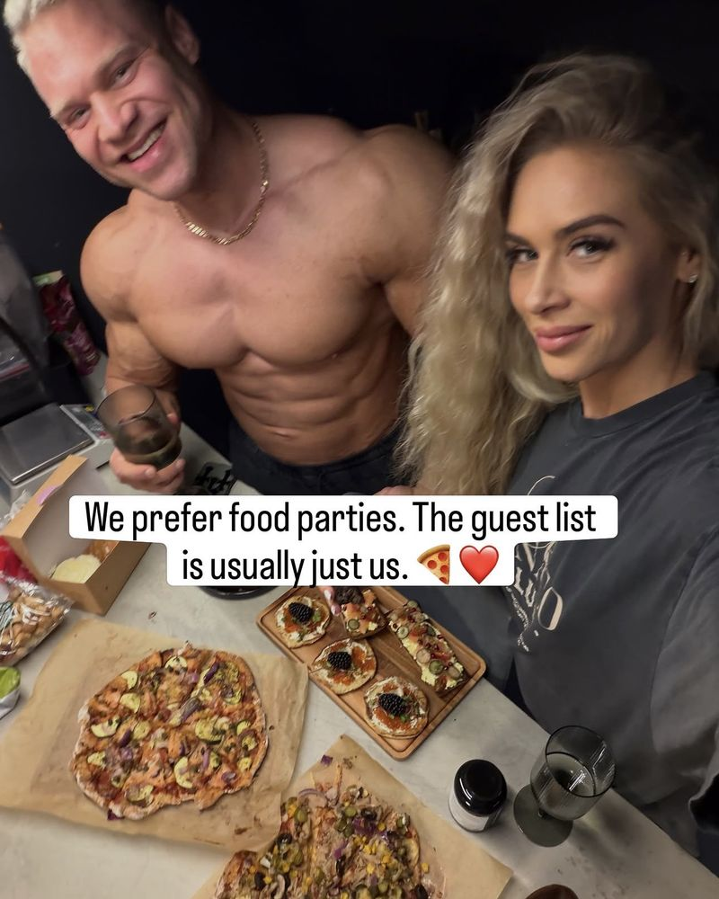
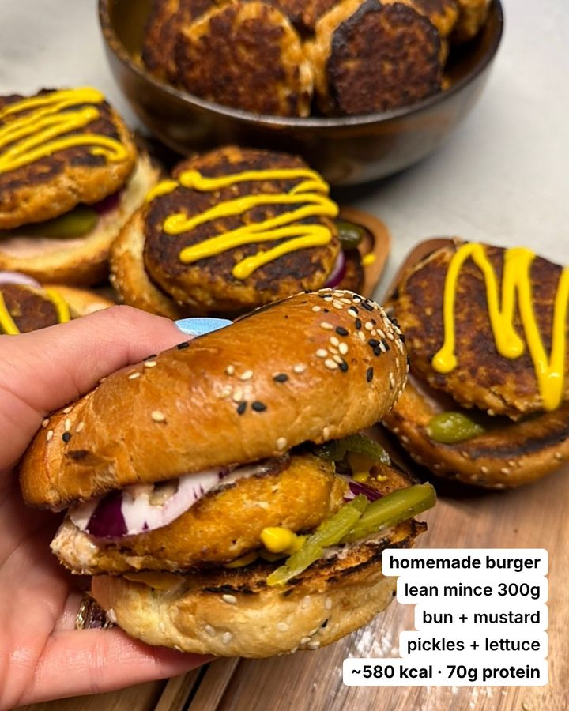
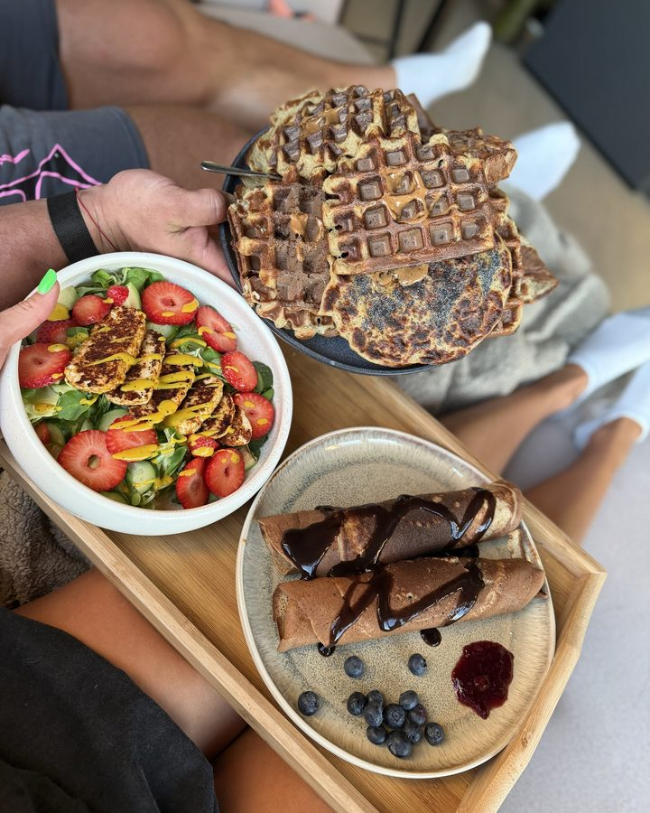
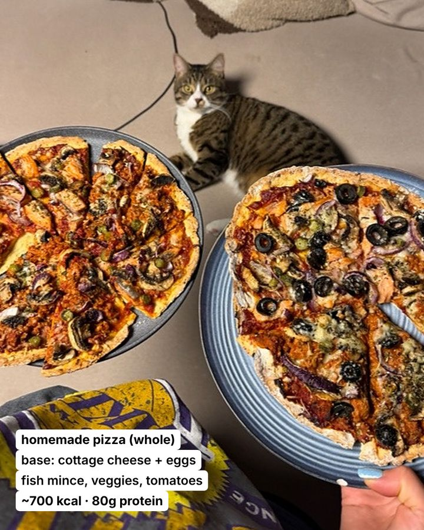
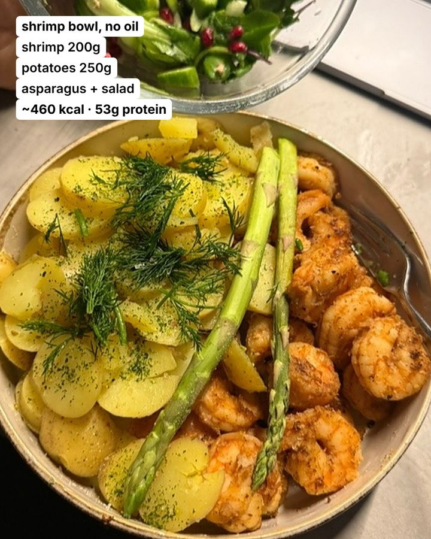
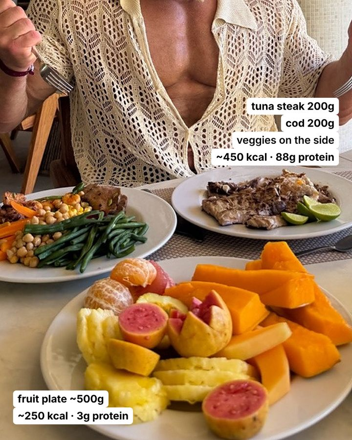
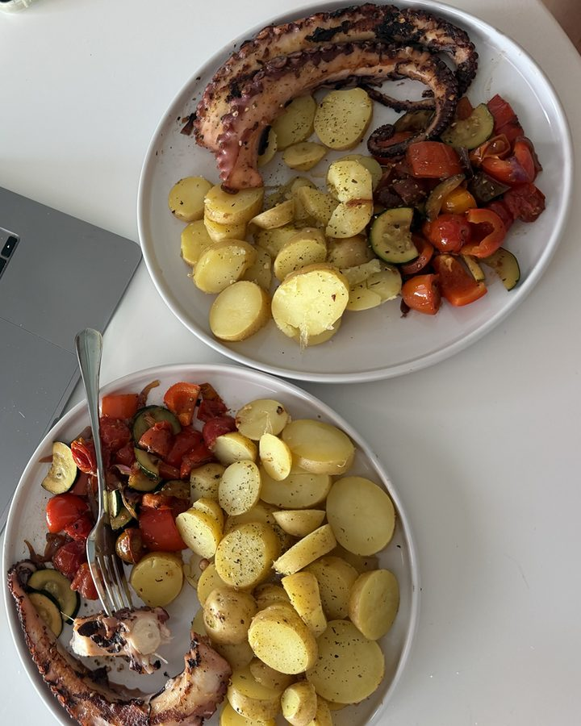
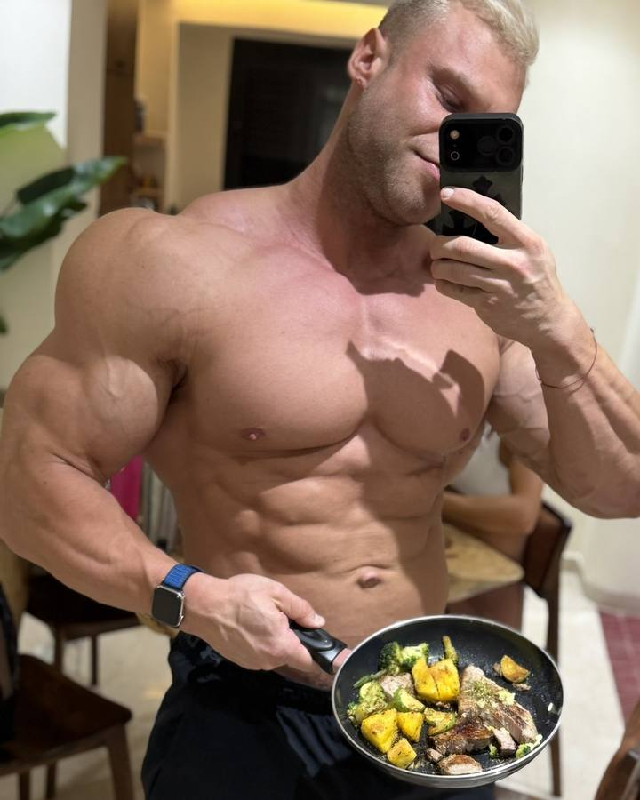
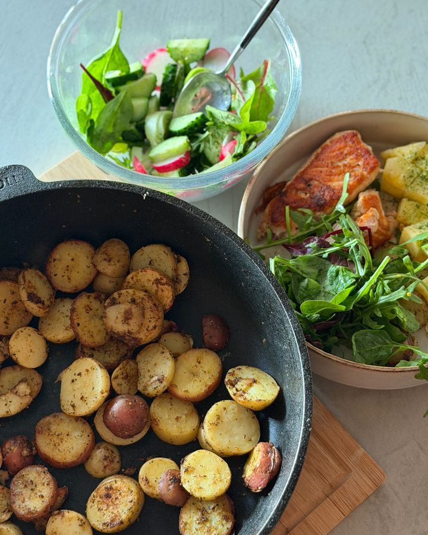
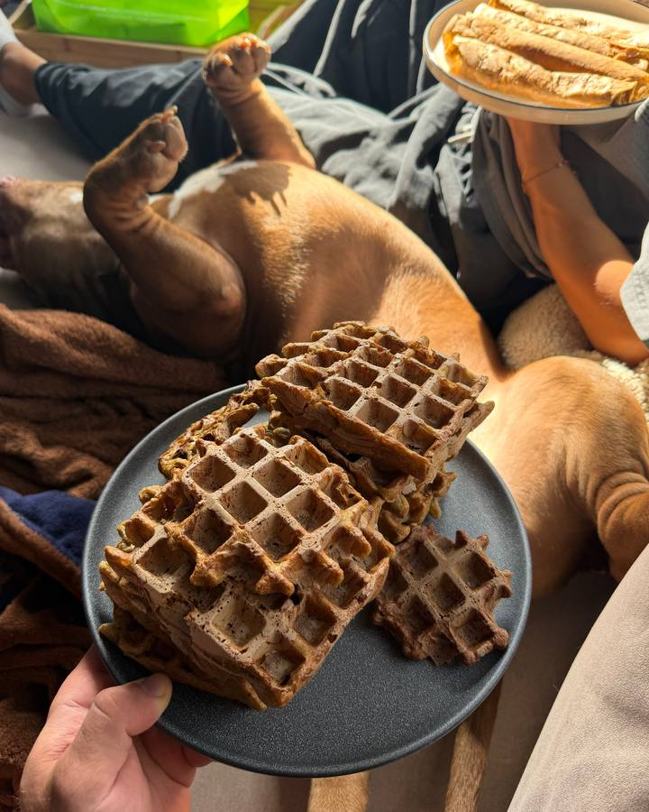
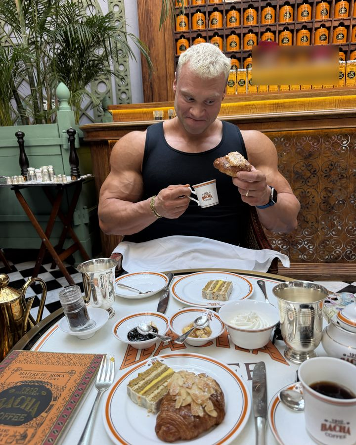
Which side has more calories? Tap your guess.Kurioje pusėje daugiau kalorijų? Paspausk, kaip manai.
Trick question: both are 1,518 kcal. Only one of them feeds you.Klausimas su kabliuku: abiejose po 1 518 kcal. Tik viena pusė tave pamaitina.
From one of my Instagram carousels. Nothing is banned. You learn what the same number can buy.Iš mano Instagram karuselės. Niekas nedraudžiama. Išmoksti, ką galima gauti už tą patį skaičių.
In the video: my protein brownie, a chocolate ice-cream bowl and banana bread.Šiame video: mano baltyminis braunis, šokoladinių ledų dubuo ir bananų duona.
Your plan is built from your food.Tavo planas sudaromas iš tavo maisto. Your favourites stay; we change the amounts.Mėgstami produktai lieka, keičiam tik kiekius.
No starving and no willpower contests. You eat a full diet with every micronutrient, so you wake up with energy and actually want to train.Jokio badavimo ir jokių valios išbandymų. Valgai pilnavertiškai, su visais mikroelementais, todėl keliesi su energija ir pats nori sportuoti.
When you feel good, you stick to the plan. When you stick to it, your body changes. That's the loop we build.Kai jautiesi gerai, laikaisi plano. Kai laikaisi plano, keičiasi kūnas. Tokį ratą ir sukuriam.
Pick a week and see how the plan adapts.Pasirink savaitę ir pažiūrėk, kaip prisitaiko planas.
The plan changes with your week. The results stay.Planas keičiasi kartu su tavo savaite. Rezultatas lieka.
A normal week: three 60-minute sessions, a step goal, meal prep and a planned dinner out fit between meetings, school runs and family time. Sunday check-in with Lukas.Įprasta savaitė: trys treniruotės po 60 min, žingsniai, maisto ruoša ir suplanuota vakarienė mieste telpa tarp susitikimų, vaikų ir šeimos. Sekmadienį check-in su Luku.
A work trip: airport food choices, a 40-minute hotel gym session, a restaurant pick, a 20-minute room workout and a step goal, then training at home on Saturday. Sunday check-in with Lukas.Komandiruotė: ką valgyti oro uoste, viešbučio salė 40 min, ką rinktis restorane, treniruotė kambaryje 20 min ir žingsniai, šeštadienį treniruotė namie. Sekmadienį check-in su Luku.
A holiday: morning walks, two 30-minute full-body sessions, a swim, local food with protein first and planned snacks for the trip home. Sunday check-in with Lukas.Atostogos: rytiniai pasivaikščiojimai, dvi viso kūno treniruotės po 30 min, plaukimas, vietinis maistas su baltymais pirma ir suplanuoti užkandžiai kelionei namo. Sekmadienį check-in su Luku.
You can always text me, and every week we look at what's working.Visada gali man parašyti, o kas savaitę kartu peržiūrim, kas veikia.
Text me when a question comes up. I answer myself, within 24 hours.Parašai, kai kyla klausimas. Atsakau pats, per 24 valandas.
Your check-in: photos, weight, sleep. We adjust the plan right away.Tavo check-in: nuotraukos, svoris, miegas. Planą koreguojam iš karto.
A call to talk it all through: a trip, a stall, a hard month.Skambutis, kai reikia viską aptarti: kelionę, sustojusį svorį, sunkų mėnesį.
“Thank you, Lukas, not just for the technical side, but for the support, the motivation and the chance to love myself.”„Ačiū Lukui ne tik už techninius dalykus, bet ir už palaikymą, motyvavimą ir suteiktą galimybę save mylėti!“
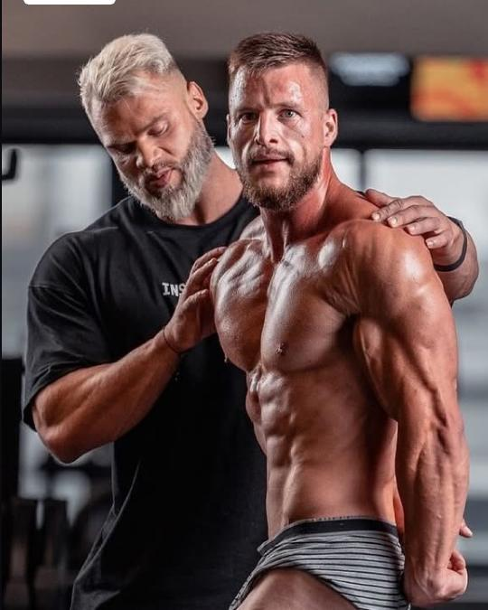
A free call about your goal and your week.Nemokamas pokalbis apie tavo tikslą ir tavo savaitę.
A 10-minute questionnaire: schedule, food, sleep, training history.10 minučių anketa: grafikas, mityba, miegas, sportavimo patirtis.
Your plans are ready, and your Insanefits pack is on its way.Tavo planai paruošti, o Insanefits paketas jau keliauja pas tave.
We put week 12 next to week 1. By now it's simply how you live.Padedam 12-ąją savaitę šalia pirmos. Dabar tai tiesiog tavo gyvenimo būdas.
INSANE 90
90 days 1 on 1 with me, built around your life90 dienų 1:1 su manimi, pagal tavo gyvenimą
Plans from €160 a month.Planai nuo 160 € per mėnesį.
We choose 3, 6 or 12 months together on the call. I take only a few new clients each month.3, 6 ar 12 mėnesių planą parenkam kartu per pokalbį. Kas mėnesį priimu tik kelis naujus klientus.
Business works like sport. You need a clear plan and a system, and you make decisions from data. That is how you build a body, and a business.Verslas veikia kaip sportas. Reikia aiškaus plano ir sistemos, o sprendimus priimi pagal duomenis. Taip augini ir kūną, ir verslą.
In any part of life, with will and discipline, everything is possible.Bet kurioje gyvenimo srityje, kai turi valios ir disciplinos, viskas įmanoma.
I run two businesses and travel a lot, and my wife and family need my attention too.Pats turiu du verslus, daug keliauju, o žmonai ir šeimai irgi reikia mano dėmesio.
So it all comes down to a system you can keep even when there is no time to train or to eat. That is exactly when the questions come: what do I do, what do I eat?Todėl visa esmė – sistema, kurios gali laikytis ir tada, kai nespėji nei pasportuoti, nei pavalgyti. Būtent tada ir kyla klausimai: ką daryti, ką valgyti?
Once you have your own system and routine, everything becomes clear and simple. Even a 20-minute workout, done properly, moves the result. You know what to eat when there is no time to cook or when you travel.Kai turi savo sistemą ir savo rutiną, viskas tampa aišku ir paprasta. Net 20 minučių treniruotė, padaryta iki galo, veda prie rezultato. Žinai, ką valgyti, kai nėra laiko gaminti ar kai keliauji.
All of these questions and doubts get solved.Visi šie klausimai ir dvejonės išsprendžiami.
@insane_lukas 113K people follow my training, food and business. My clients live in Lithuania, the UK and the USA.113 tūkst. žmonių seka mano treniruotes, mitybą ir verslą. Mano klientai gyvena Lietuvoje, Jungtinėje Karalystėje ir JAV.
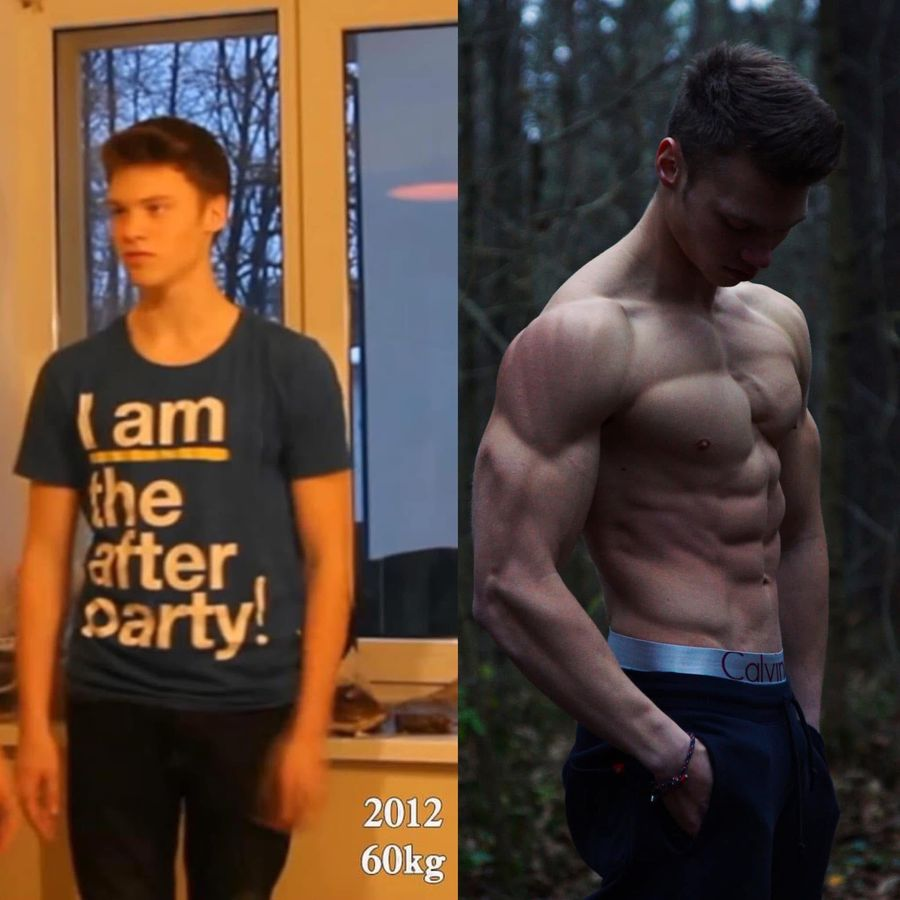
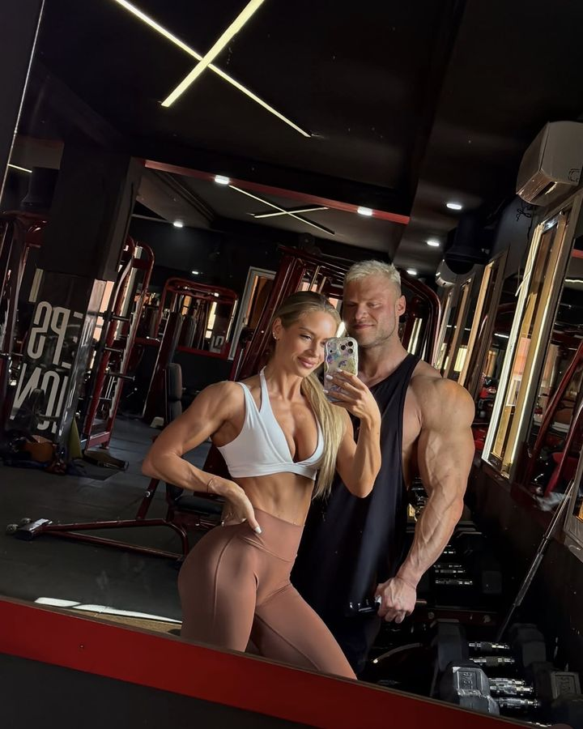
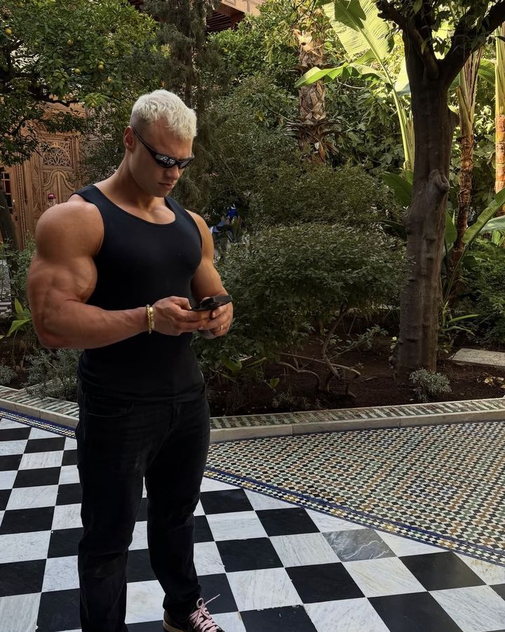
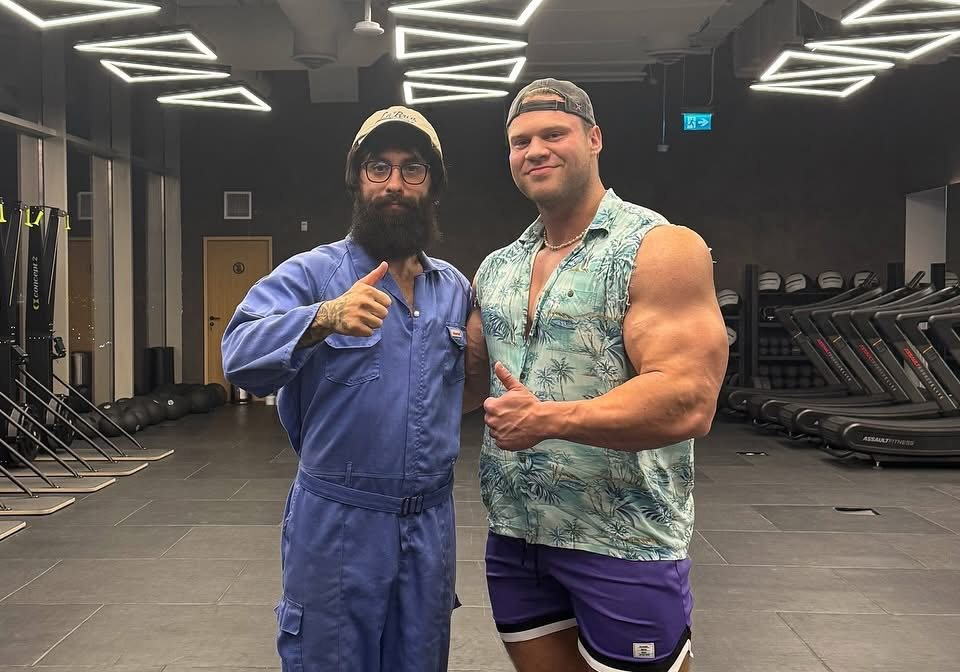
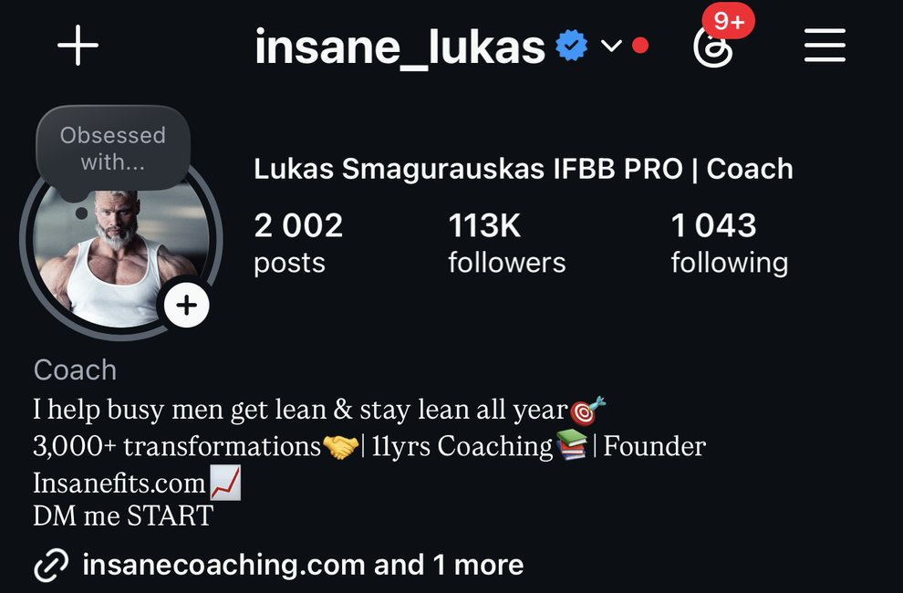
Plans start at €160 a month. We choose 3, 6 or 12 months together on the call, once I know your goal. If we're not a fit, I'll tell you honestly.Planai nuo 160 € per mėnesį. 3, 6 ar 12 mėnesių planą parenkam kartu per pokalbį, kai suprantu tavo tikslą. Jei netinkame vienas kitam, pasakysiu atvirai.
No. Your plan is built from food you already eat, in grams. Nothing is banned; we change the amounts.Ne. Planas sudaromas gramais iš maisto, kurį jau valgai. Nieko nedraudžiama, keičiam tik kiekius.
Yes. You get travel and busy-week versions of your plan: hotel gym, room workout, what to order at a restaurant.Taip. Gauni plano versijas kelionėms ir užimtoms savaitėms: viešbučio salė, treniruotė kambaryje, ką rinktis restorane.
We fit the number of sessions to your week. The weekly check-in takes a few minutes: photos, weight and how the week went.Treniruočių skaičių pritaikom prie tavo savaitės. Savaitinis check-in užtrunka kelias minutes: nuotraukos, svoris ir kaip praėjo savaitė.
No. I build your programme around your goal, for home or for the gym. You can make progress at home too, and I'll tell you what you need for it.Ne. Programą sudarau pagal tavo tikslą: namams arba sporto salei. Progresuoti galima ir namuose, o ko tam reikės, pasakysiu.
Yes. We start at your level and build step by step. One message after three months: “I'd never trained before… Happy with my 3-month result!”Taip. Pradedam nuo tavo lygio ir keliam žingsnis po žingsnio. Viena žinutė po trijų mėnesių: „Prieš tai niekada nesportavau… Džiaugiuosi 3 mėn. rezultatu!“
We talk about your goal, what stopped you before and whether we're a fit. If we are, I send you the questionnaire.Pakalbam apie tavo tikslą, kas trukdė anksčiau ir ar tinkame vienas kitam. Jei taip, atsiunčiu anketą.
Yes to both. I coach online in English and Lithuanian, with clients in Lithuania, the UK and the USA.Taip, abiem atvejais. Dirbu internetu lietuviškai ir angliškai; klientų turiu Lietuvoje, Jungtinėje Karalystėje ir JAV.
If you want 10 kg off in two weeks, a PDF with no contact, or the cheapest plan online, I'm not your coach.Jei nori numesti 10 kg per dvi savaites, nori PDF be jokio kontakto arba ieškai pigiausio plano internete, aš ne tavo treneris.
Not ready for 1:1 yet? DM me MACROS on Instagram and I'll send you my 3 meals with exact grams and 10 recipes, free.Dar nesi pasiruošęs dirbti 1:1? Sek @insane_coaching – ten viskas lietuviškai.
DM MACROS @insane_coachingIf you're ready to start, book the call. I answer every message myself within 24 hours.Jei esi pasiruošęs pradėti, registruokis pokalbiui. Į kiekvieną žinutę atsakau pats per 24 valandas.
Rather email? Patogiau el. paštu? lukas@insanecoaching.com
Cookies.Slapukai. Analytics and advertising cookies (Google, Meta) switch on only if you agree.Analitikos ir reklamos slapukus (Google, Meta) įjungiu tik tau sutikus. PrivacyPrivatumas